📰 Ultimele stiri
Vezi toate ›
Cod roșu de caniculă la Drobeta-Turnu Severin: 11 puncte de prim ajutor active și stropirea străzilor de două ori pe zi
Municipiul Drobeta-Turnu Severin se află sub incidența unui cod roșu de caniculă emis de ANM, valabil 29 iunie – 1 iulie...

29 Iunie – Ziua Internațională a Dunării. Fluviul care definește identitatea și dezvoltarea județului Mehedinți
În fiecare an, pe 29 iunie, este sărbătorită Ziua Internațională a Dunării — un moment dedicat unuia dintre cele mai imp...

Minoră dispărută din Drobeta-Turnu Severin — Lulea Alexandra Ionela, 15 ani. Dacă o recunoști, sună la 112!
Poliția municipiului Drobeta-Turnu Severin caută o minoră de 15 ani care nu a mai revenit la Centrul Rezidențial pentru ...

Drobeta Fly-In 2026, ediția a XIX-a: spectacol aerian pe cerul Severinului. Sute de vizitatori la Aerodromul Drobeta
Aerodromul Drobeta a găzduit sâmbătă cea de-a XIX-a ediție a Drobeta Fly-In, unul dintre cele mai importante evenimente ...

CS Drobeta a promovat în Liga a III-a! Severinul revine în fotbalul național după mai bine de un deceniu
Drobeta-Turnu Severin sărbătorește revenirea în fotbalul național. CS Drobeta a obținut promovarea în Liga a III-a, după...
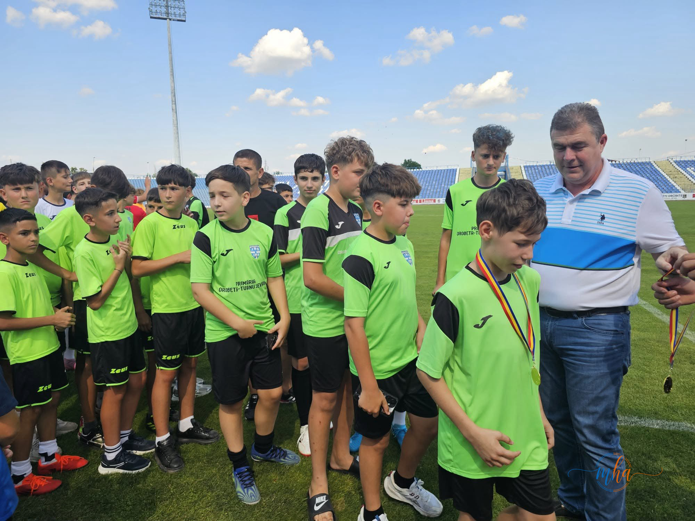
Sute de copii și juniori premiați pe Stadionul Municipal. Mehedințiul își răsplătește tinerele speranțe ale fotbalului
Aproape 600 de copii și juniori legitimați la cluburile afiliate AJF Mehedinți au fost premiați pe gazonul Stadionului M...
Tricolorul, înălțat cu onoruri militare la Drobeta-Turnu Severin, de Ziua Drapelului Național
România sărbătorește, astăzi, Ziua Drapelului Național, unul dintre cele mai importante simboluri ale identității și unității naționale. În fiecare an...
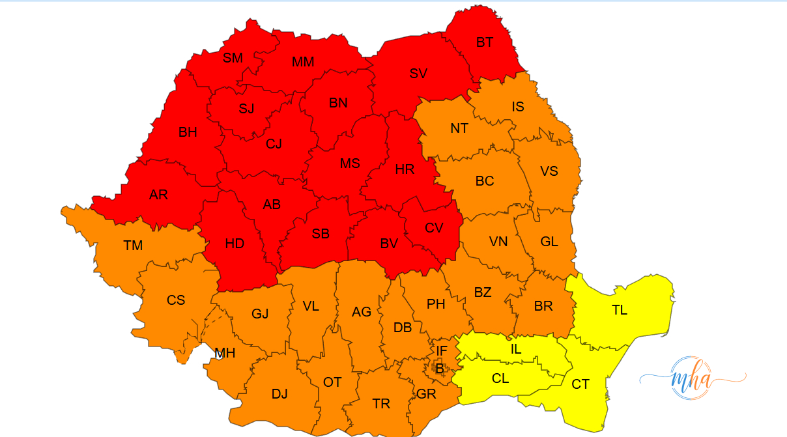
Urmează un val de caniculă în Mehedinți. Au fost emise coduri de vreme deosebit de calduroasă
Administrația Națională de Meteorologie a emis o informare meteorologică și mai multe avertizări de tip cod galben, portocaliu și roșu pentru un val d...
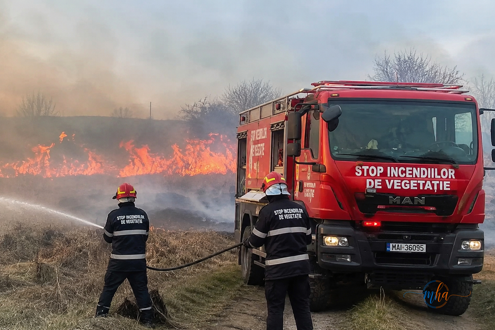
Drone și voluntari în lupta cu incendiile de vegetație din Mehedinți
Incendiile de vegetație reprezintă o amenințare tot mai acută în județul Mehedinți, mai ales în perioadele secetoase, când solul este extrem de uscat ...

Exercițiu de amploare al ISU Mehedinți la Spitalul Județean din Drobeta: 50 de pompieri au simulat un incendiu la Camera de gardă
Pompierii mehedințeni au simulat un incendiu izbucnit în Camera de gardă a spitalului județean. Peste 50 de pompieri cu 12 autospeciale au acționat alături de SMURD, Ambulanță, Jandarmerie și Poliție...

Tânăr de 20 de ani din Baia de Aramă, arestat preventiv pentru trafic de droguri
Tânărul ar fi vândut peste 100 de grame de canabis și o cantitate de 2MMC. Percheziții în Baia de Aramă și într-un cămin studențesc din Timișoara...

Marius Screciu a continuat întâlnirile cu cetățenii. Problemele din cartiere și activitatea asociațiilor de proprietari, printre principalele subiecte discutate
Primarul Drobeta-Turnu Severin a continuat seria întâlnirilor cu cetățenii, ajungând în zona Parcului Cildro și pe străzile Topolniței și Traian...

CS Drobeta joacă sâmbătă pentru promovarea în Liga 3. Suporterii sunt așteptați pe Stadionul Municipal
Sâmbătă, 27 iunie, de la ora 17:30, Stadionul Municipal din Drobeta-Turnu Severin găzduiește meciul decisiv pentru promovarea CS Drobeta în Liga 3...
Drobeta Fly In 2026 își deschide porțile pentru expozanți și participanți. Cea de-a XIX-a ediție va avea loc pe 27 iunie
Pasionații de aviație, antreprenorii și expozanții din diverse domenii sunt invitați să participe la cea de-a XIX-a ediție a evenimentului aeronautic ...

Accident grav pe DN 56A, la Cujmir. Cinci persoane implicate, printre care trei copii
Un grav accident rutier s-a produs astăzi pe Drumul Național 56A, în localitatea Cujmir, județul Mehedinți, unde un autotren și un autoturism au fost ...

Tragedie la Drobeta-Turnu Severin. Un bărbat a murit după ce a fost lovit de tren în zona Cetății Medievale
Un grav accident feroviar s-a produs în această dimineață în municipiul Drobeta-Turnu Severin, în zona Cetății Medievale...

„Bucură-te, RomânIE!” — Spectacol folcloric dedicat Zilei Universale a Iei, la Pădurea Crihala
Tradiția românească va fi sărbătorită prin muzică, dans și port popular autentic, pe 24 iunie, la Drobeta-Turnu Severin....

Pavilionul Dermato-Venerice al Spitalului Județean Severin, consolidat seismic — Zeblex avansează lucrările conform graficului
Consiliul Județean Mehedinți continuă investiția de consolidare seismică și eficientizare energetică a Pavilionului Derm...
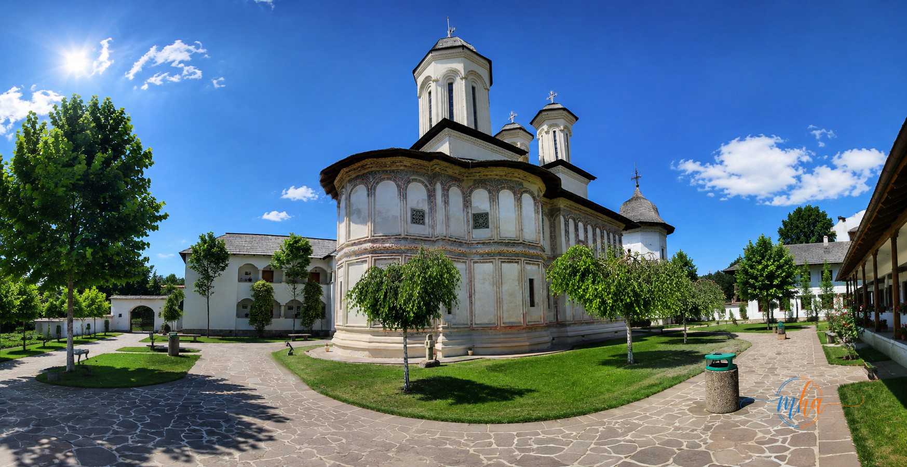
Mănăstirea Berislăvești din Vâlcea — o evadare de weekend din Mehedinți, în inima Olteniei
Istorie de peste 250 de ani, arhitectură brâncovenească și liniște spirituală la doar câteva ore de Drobeta-Turnu Severin — un traseu turistic ce poate fi combinat cu Mănăstirea Cozia și Călimănești-Căciulata.
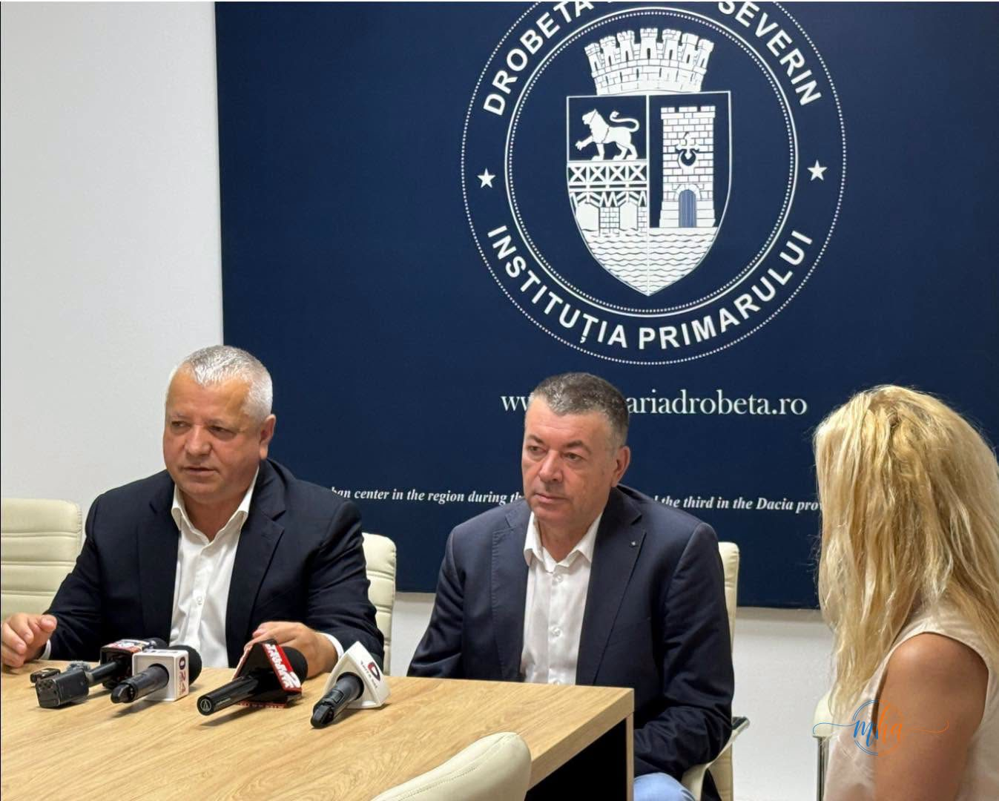
Drobeta-Turnu Severin și Doboj fac primul pas spre înfrățire. Ambasadorul Bosniei și Herțegovinei a vizitat Primăria municipiului
Primarul Marius Screciu l-a primit pe ambasadorul Bosniei și Herțegovinei, Milorad Živković, pentru a discuta despre înfrățirea cu orașul Doboj și colaborarea în turism, economie și cultură.

Investiție de peste 1,2 milioane de lei: Liceul de Arte „I. Șt. Paulian" primește instrumente muzicale moderne printr-un proiect european
Elevii Liceului de Arte „I. Șt. Paulian" din Drobeta-Turnu Severin vor studia cu instrumente muzicale moderne achiziționate prin proiectul european transfrontalier „Two Voices and One Purpose", finanțat prin Interreg VI-A România–Bulgaria.
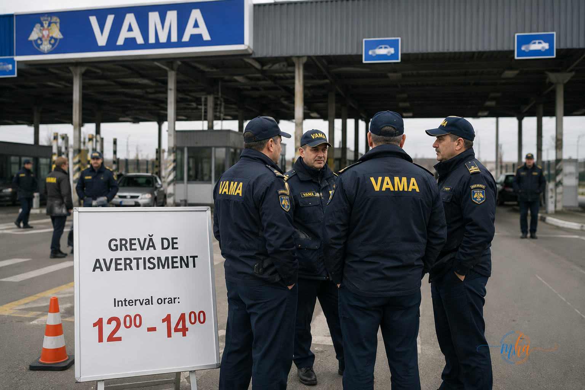
Vameșii au intrat astăzi în grevă de avertisment: „Problemele sunt ignorate de ani de zile"
Angajații Autorității Vamale Române au oprit lucrul miercuri între orele 12:00 și 14:00, la inițiativa Sindicatului Național Meridian, după ani de revendicări ignorate și blocarea oricărui dialog cu autoritățile.
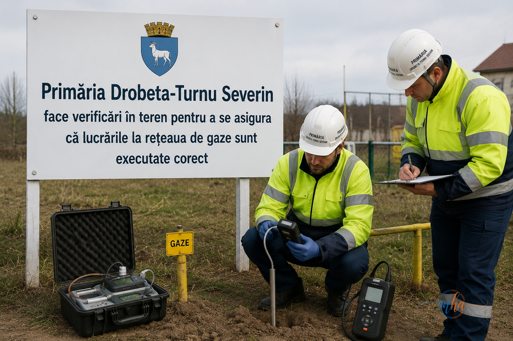
Primăria Drobeta-Turnu Severin verifică în teren lucrările la rețeaua de gaze naturale
Echipe ale administrației locale desfășoară inspecții pe teren pentru a se asigura că lucrările de extindere a rețelei de gaze sunt executate la standardele de calitate și siguranță impuse de normele în vigoare.
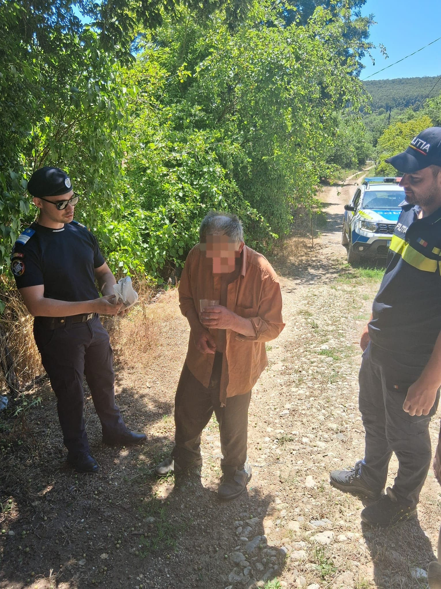
Bărbat dispărut de aproape o săptămână, găsit în viață în Mehedinți.
Bărbat dispărut de aproape o săptămână, găsit în viață în Mehedinți. Misiunea de căutare s-a încheiat cu succes Un bărbat în vârstă de 72 de ani, dat ...
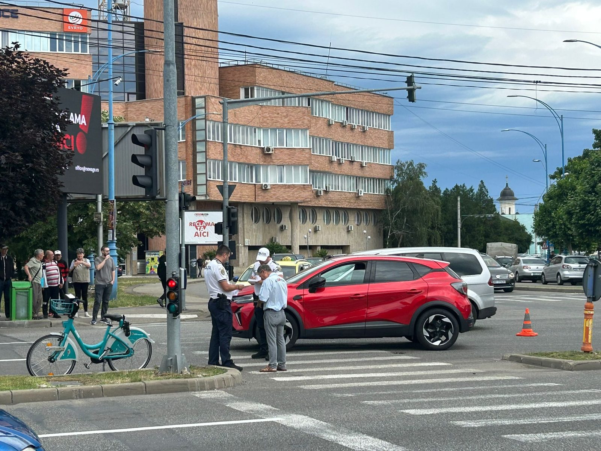
Accident rutier în Drobeta-Turnu Severin. Biciclist implicat într-o coliziune cu un autoturism
Un accident rutier s-a produs astăzi în municipiul Drobeta-Turnu Severin, la intersecția străzii Smîrdan cu Bulevardul Tudor Vladimirescu, zonă intens...
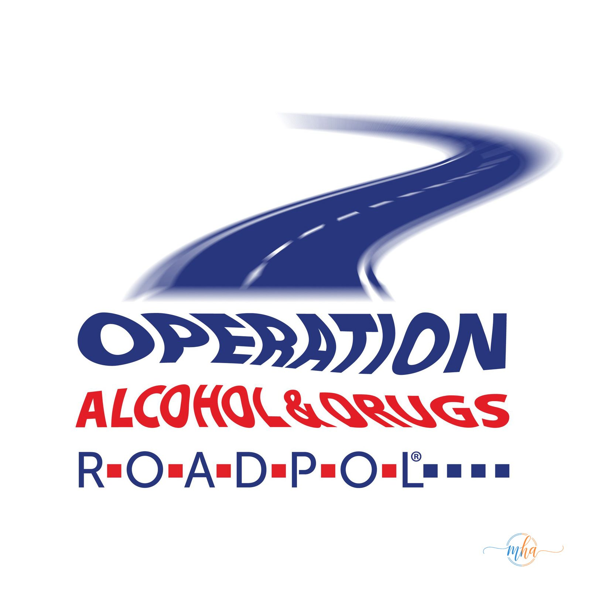
Acțiunea ROADPOL „Alcohol & Drugs" în Mehedinți: controale intensive în trafic 15–21 iunie, cu maraton de 24 de ore pe 19 iunie
Polițiștii rutieri din Mehedinți intensifică controalele în trafic pentru depistarea conducătorilor auto aflați sub influența alcoolului sau substanțelor psihoactive...
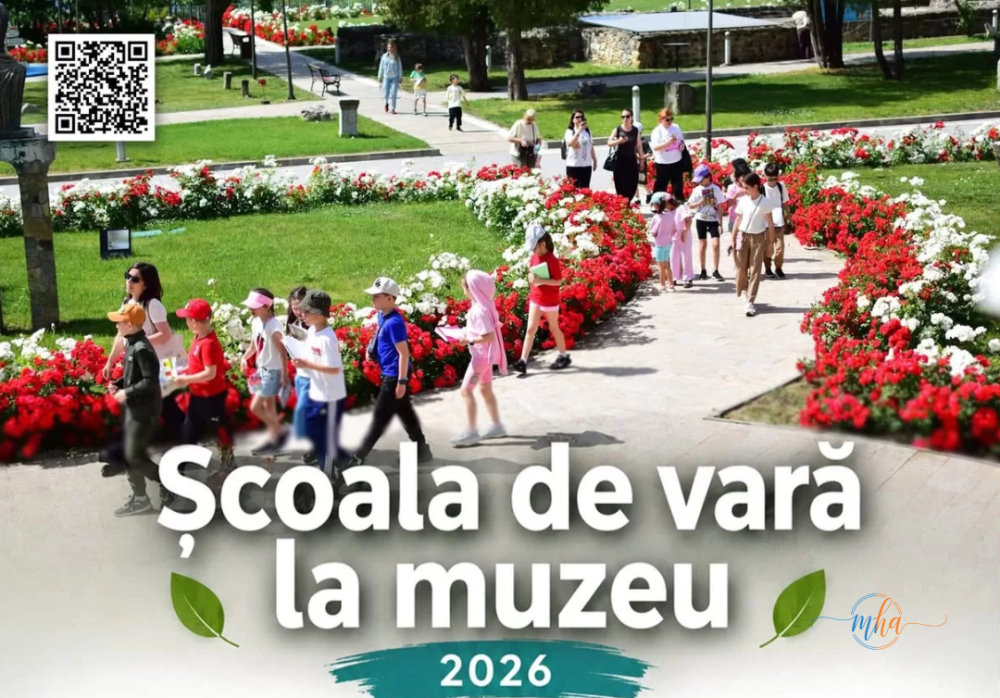
„Școala de Vară la Muzeu" revine în 2026 la Drobeta-Turnu Severin: copiii sunt invitați să descopere istoria, arta și natura prin activități interactive
Muzeul Regiunii Porților de Fier deschide înscrierile pentru ediția 2026. 30 de locuri disponibile pentru copii între 7–14 ani. Înscrieri: 15–30 iunie. Activități: 6–10 iulie, 09:00–12:00...
Primăria Drobeta-Turnu Severin face pași importanți spre digitalizare printr-un proiect finanțat din fonduri europene
Primăria Municipiului Drobeta-Turnu Severin continuă procesul de modernizare a serviciilor publice printr-un amplu proiect de digitalizare finanțat din fonduri europene...
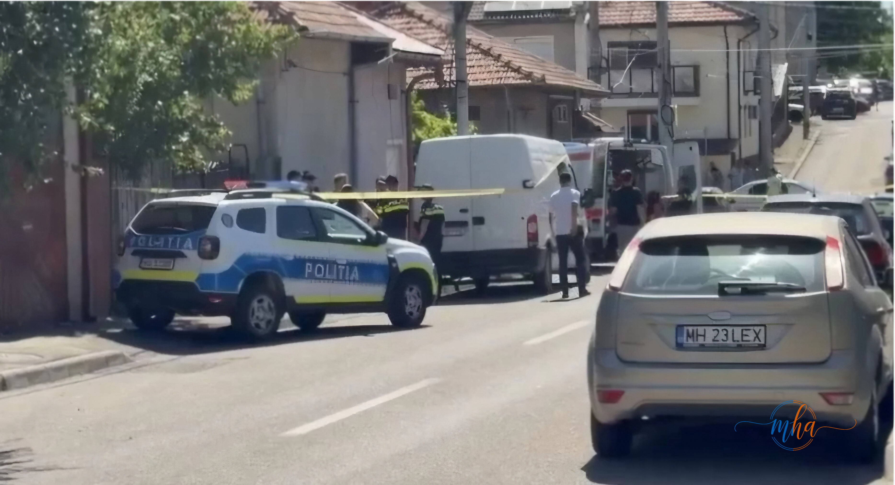
Crima socanta in Dr. Tr. Severin
CRIMĂ ȘOCANTĂ ÎN DROBETA TURNU SEVERIN. Un tânăr de 25 de ani este acuzat că și-a ucis mama prin înjunghiere, în plină zi. Tragedia s-a petrecut în mu...
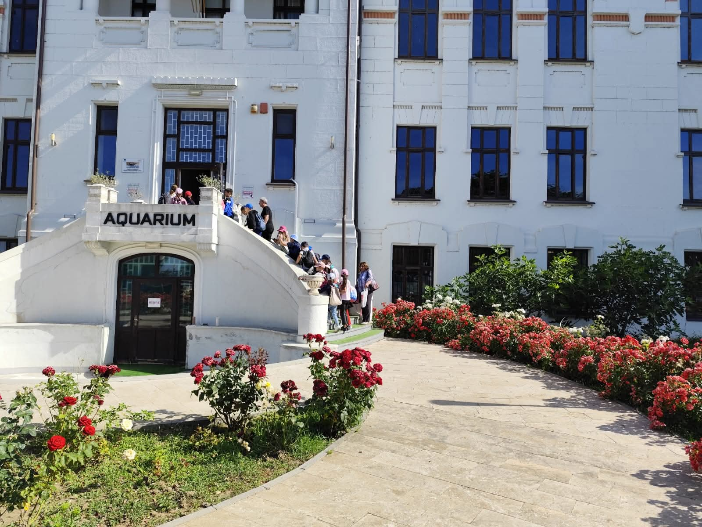
Istoria a prins viață la Drobeta-Turnu Severin: peste 600 de oameni au vizitat Muzeul Regiunii Porților de Fier
Peste 600 de vizitatori au trecut pragul Muzeului Regiunii Porților de Fier. O zi dedicată istoriei, culturii și patrimoniului local DROBETA-TURNU SEV...
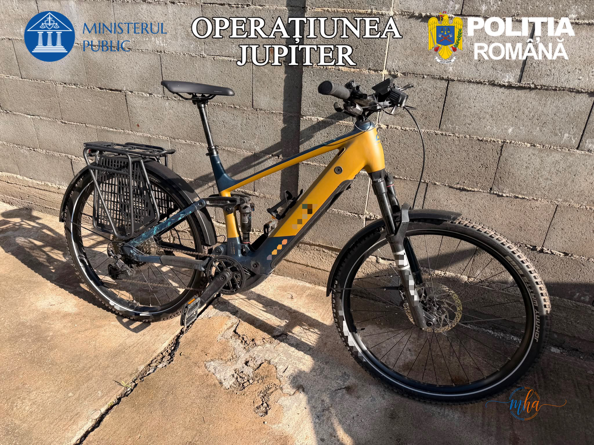
OPERATIUNEA "JUPITER "CONTINUA
În cadrul operațiunii JUPITER, sub coordonarea Parchetului de pe lângă Înalta Curte de Casație și Justiție și Inspectoratului General al Poliției Româ...
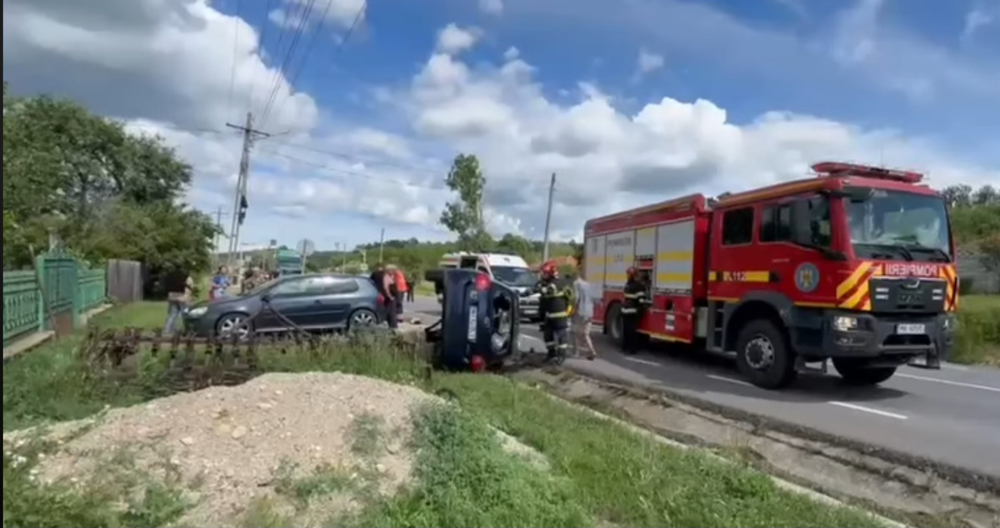
Accident rutier pe DN6, în localitatea Tâmna. Două persoane au avut nevoie de îngrijiri medicale
Un accident rutier s-a produs vineri, 12 iunie 2026, pe Drumul Național 6, în localitatea mehedințeană Tâmna. La fața locului au intervenit de urgență...
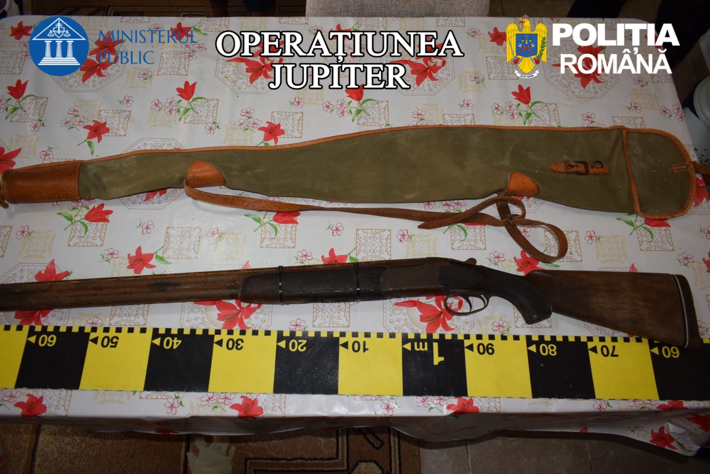
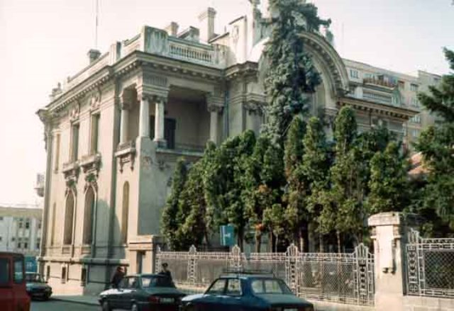
Cod portocaliu de vreme severă în Mehedinți.
Cod portocaliu de vreme severă în Mehedinți. Grindină, ploi torențiale și vijelii în mai multe localități până la ora 19:00!...
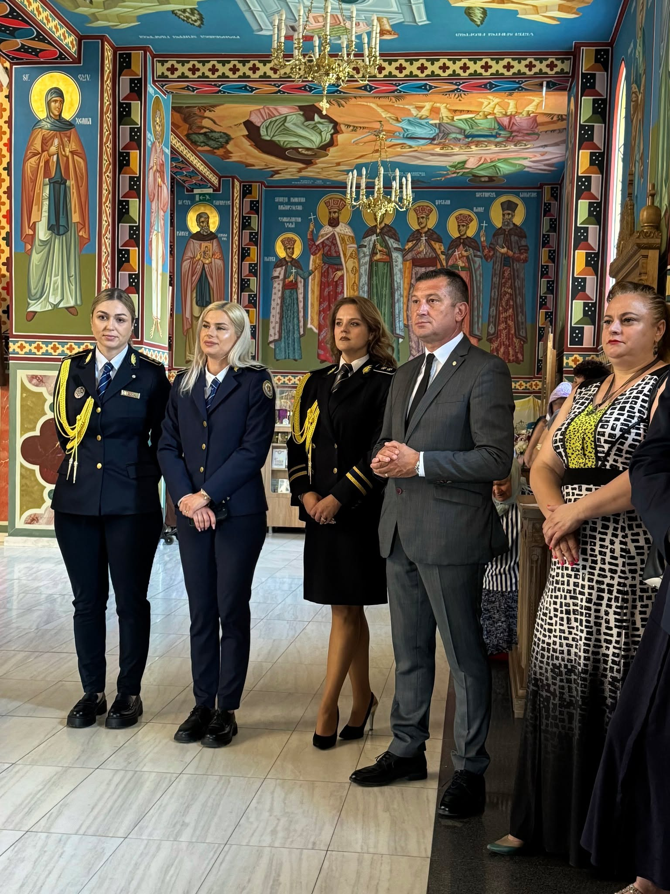
Preoții de penitenciar din Oltenia s-au reunit la Drobeta-Turnu Severin pentru întâlnirea anuală dedicată reintegrării sociale a deținuților
Drobeta-Turnu Severin a găzduit, joi, 11 iunie 2026, întâlnirea anuală a preoților de penitenciar din regiunea Sud-Vest Oltenia, eveniment organizat d...
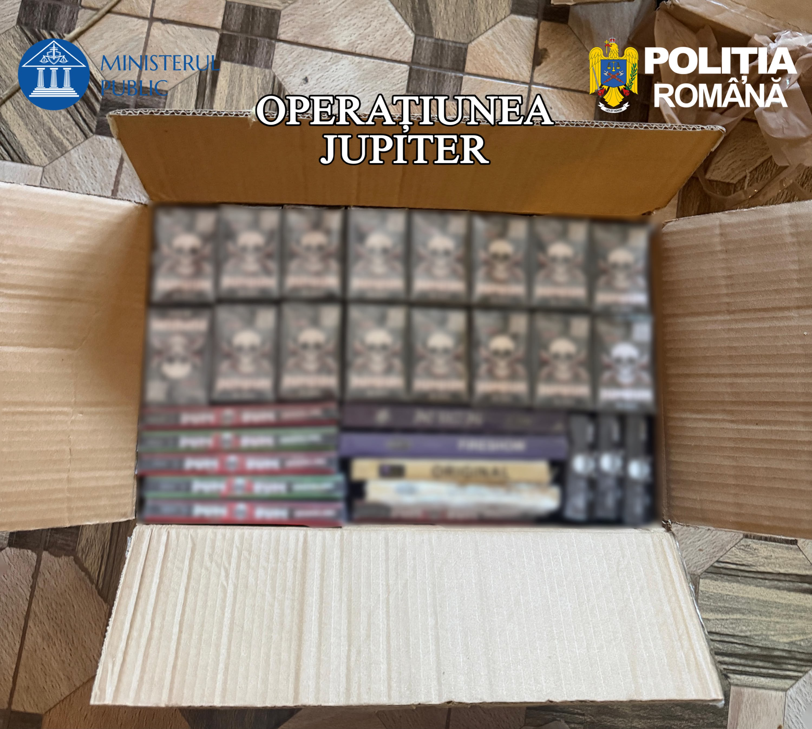
OPERAȚIUNEA JUPITER CONTINUĂ CU PERCHEZIȚII ÎNTR-UN DOSAR CONTRABANDĂ ASIMILATĂ
În cadrul operațiunii JUPITER, sub coordonarea Parchetului de pe lângă Înalta Curte de Casație și Justiție și Inspectoratului General al Poliției Româ...
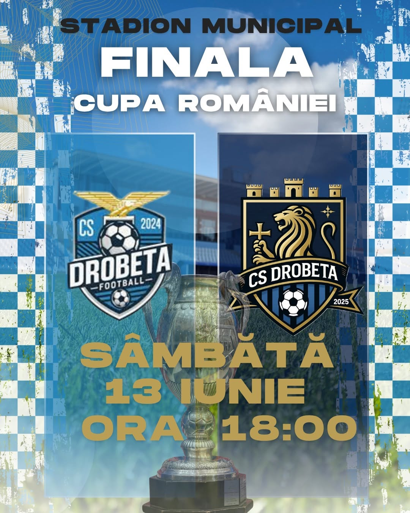
Finala Cupei României – Mehedinți 2026: CS Drobeta 2024 și CS Drobeta își dispută trofeul județean pe Stadionul Municipal!
Fotbalul mehedințean își consumă ultimul și cel mai așteptat act al sezonului 2025-2026. Sâmbătă, 13 iunie 2026, de la ora 18:00, pe Stadionul Municip...
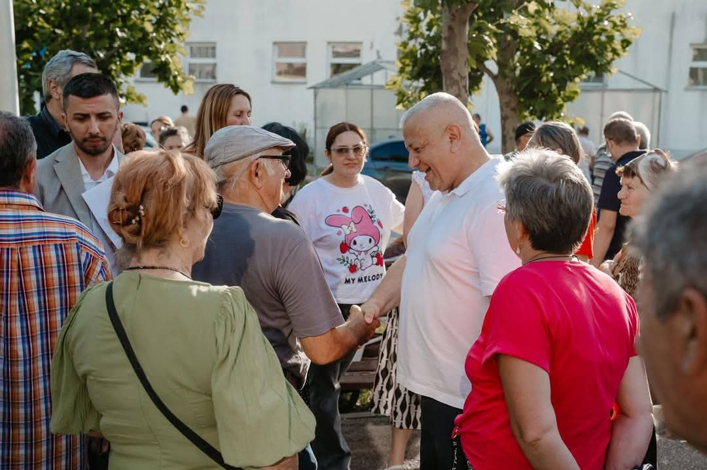
Primarul Marius Screciu a început întâlnirile din cartiere. Prima oprire: CET Nord
Primarul municipiului Drobeta-Turnu Severin, Marius Screciu, a dat startul unei serii de întâlniri directe cu locuitorii din cartierele orașului, un d...

Accident mortal la Mehadia
Astăzi, în jurul orei 15.30, pe DN 6, la Km 389+500 m, în afara localității Mehadia, s-a produs un accident rutier în care au fost implicate un autotu...
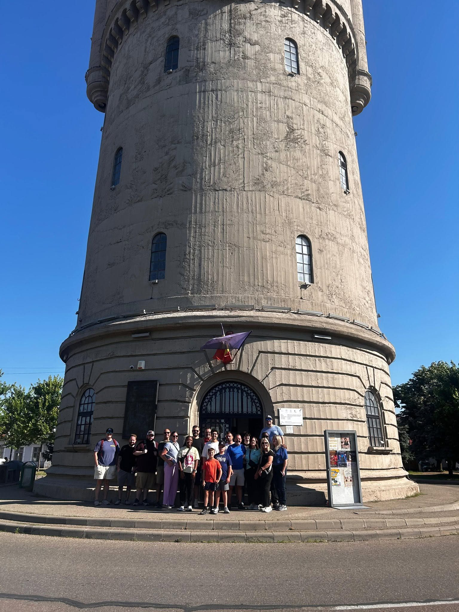
Turiști din America au vizitat Castelul de Apă din Drobeta-Turnu Severin. O experiență memorabilă în inima orașului
Un grup de turiști din Statele Unite ale Americii a vizitat astăzi Castelul de Apă, unul dintre cele mai reprezentative obiective turistice ale munici...
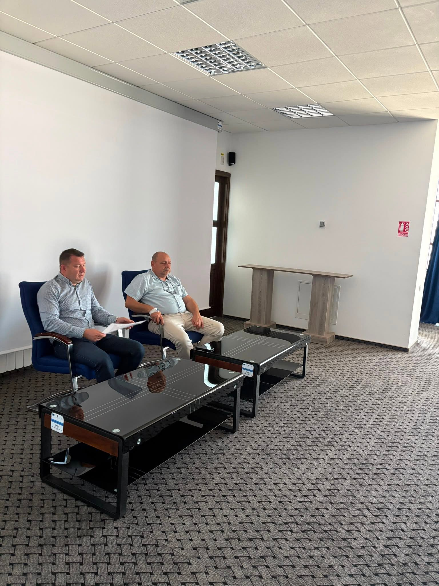
DGASPC Mehedinți accelerează procesul de dezinstituționalizare a persoanelor adulte cu dizabilități. Autoritățile își unesc eforturile pentru integrarea în comunitate
Direcția Generală de Asistență Socială și Protecția Copilului Mehedinți a făcut un nou pas important în implementarea reformei serviciilor sociale ded...

Wheels on Wild Trails — Geopark Mehedinți MTB 2026 | Galerie Foto, Partea a IV-a
Peste 1.000 de fotografii surprind cele mai spectaculoase momente de pe traseele montane ale Geoparcului Platoul Mehedin...
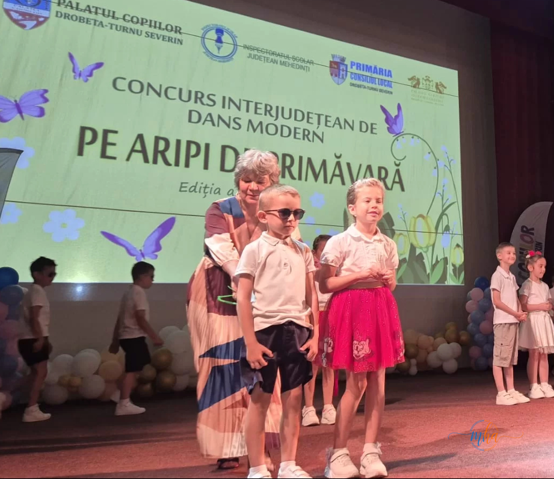
Peste 500 de copii au participat la concursul interjudețean „Pe Aripi de Primăvară", desfășurat la Palatul Culturii din Severin
Palatul Culturii „Teodor Costescu" din Drobeta-Turnu Severin a găzduit cea de-a XXIII-a ediție a concursului interjudețe...
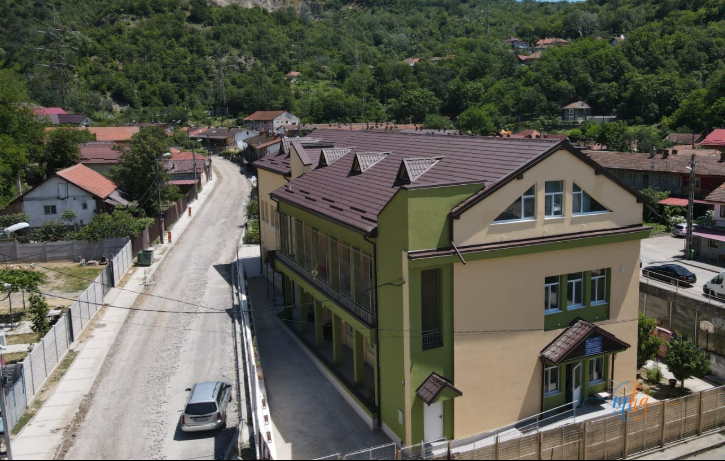
Centrul de Plasament Nr. 3 din Gura Văii, complet modernizat — investiție de 3,6 milioane lei pentru copiii din sistemul de protecție socială
CJ Mehedinți și DGASPC au finalizat reabilitarea și eficientizarea energetică a centrului — izolare termică, tâmplărie nouă, sisteme moderne de încălzire și iluminat, spații interioare și exterioare reabilitate...
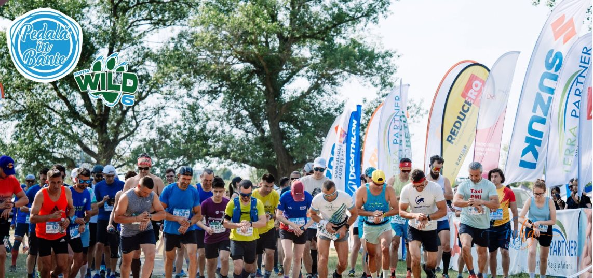
Pedală în Bănie 2026 aduce Era Jurassic în Oltenia — MTB, Trail Run și distracție pentru familie, pe malul Jiului
12–14 iunie, Podari. Ediția a 7-a: dinozaur animatronic, competiții MTB și Trail Run, premii de peste 15.000 euro, concerte și film în aer liber. Îscrieri până pe 10 iunie, ora 18:00...
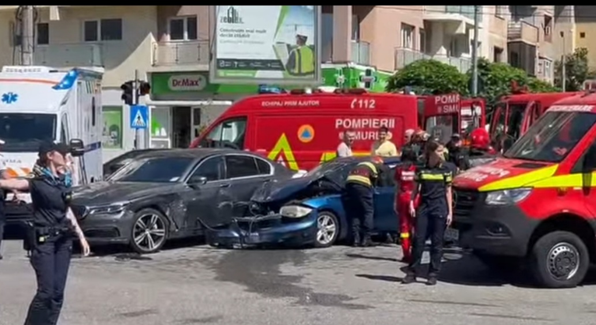
Accident rutier în Drobeta-Turnu Severin. O persoană a fost descarcărată
Un accident rutier s-a produs astăzi la intersecția străzilor Tudor Vladimirescu și Independenței din Drobeta-Turnu Severin, pe fondul neacordării de ...
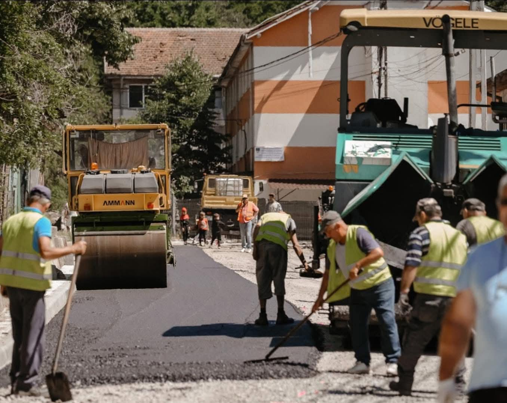
Primul strat de asfalt a fost turnat pe străzile Retezat și Jidoştimeței din cartierul Gura Văii
Lucrările de modernizare a infrastructurii rutiere continuă în municipiul Drobeta-Turnu Severin. Astăzi, pe străzile Retezat și Jidoştimeței din cartier...
Perseverența transformă pasiunea în performanță!
Agent de poliție Doroiman Mădălina-Ionela, în vârstă de 28 de ani, absolventă a S.P.A.P.F. „Avram Iancu” Oradea, promoția 2022, își desfășoară activit...